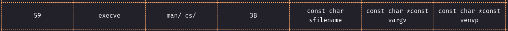
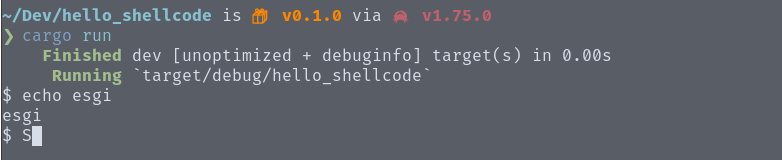

We're going to look at how to generate shellcode for Linux from code written in Rust.
We'll be basing ourselves on a technique developed by Sylvain Kerkour, which consists in producing completely independent code (PIC) and extracting the code from the binary with "objcopy".
For our example, we're going to develop a shellcode that will simply execute a shell with "/bin/sh". To do this, we're going to use the "execve" system call, the documentation for which can be found here: https://x64.syscall.sh/
Here's the content of our Rust code:
# src/main.rs
#![no_std]
#![no_main]
use core::arch::asm;
#[cfg(not(test))]
#[panic_handler]
fn panic(_: &core::panic::PanicInfo) -> ! {
loop {}
}
#[no_mangle]
unsafe fn _start() {
asm!(
"syscall",
in("rax") 59,
in("rdi") "/bin/sh\0".as_ptr(),
in("rsi") 0,
in("rdx") 0,
);
}
Here, we start by telling Cargo that we're going to compile our program without the standard library, which is essential if we're to obtain independent code.
We then rename our main function "_start", as this is the real entry point into Linux.
Next, we call the "syscall" assembly instruction, placing the right values in the right registers according to the documentation:

The code is relatively simple, but now we need to fill in some additional configurations for Cargo to produce a valid binary:
# .cargo/config.toml
[build]
rustflags = [
"-C", "link-arg=-nostdlib",
"-C", "link-arg=-static",
"-C", "link-arg=-Wl,-T./shellcode.ld,--build-id=none",
"-C", "relocation-model=pic"
]
These parameters tell Cargo to produce a PIC (Position Independent Code) and the linker to use the section layout configured in the "shellcode.ld" file:
# shellcode.ld
ENTRY(_start);
SECTIONS
{
. = ALIGN(16);
.text :
{
*(.text.prologue)
*(.text)
*(.rodata)
}
.data :
{
*(.data)
}
/DISCARD/ :
{
*(.interp)
*(.comment)
*(.debug_frame)
}
}
Here, we merge the "rodata" section, which contains the static variables, with the "text" section, which contains the code, so that our shellcode can read its variables independently.
All that remains is to compile our code to produce the shellcode, by compiling our program with the "cargo build --release" command, then we just have to extract the shellcode using the following command:
objcopy -O binary shellcode/target/release/shellcode shellcode.bin
You can then load the "shellcode.bin" file into your favorite loader:

Now you've got all you need to generate shellcode for Linux.